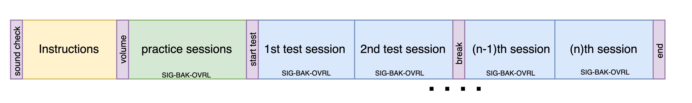
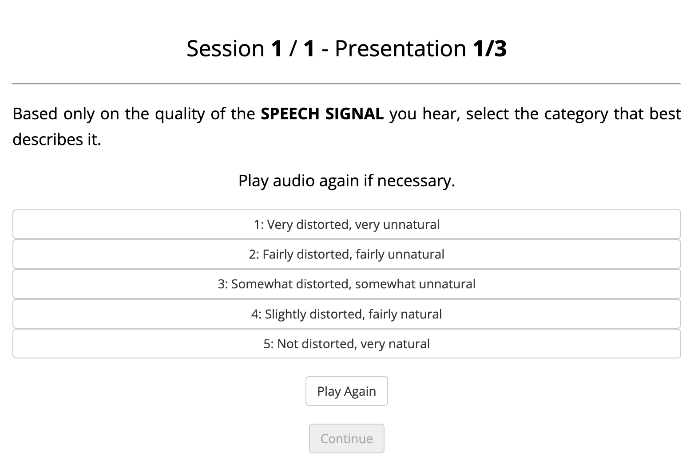
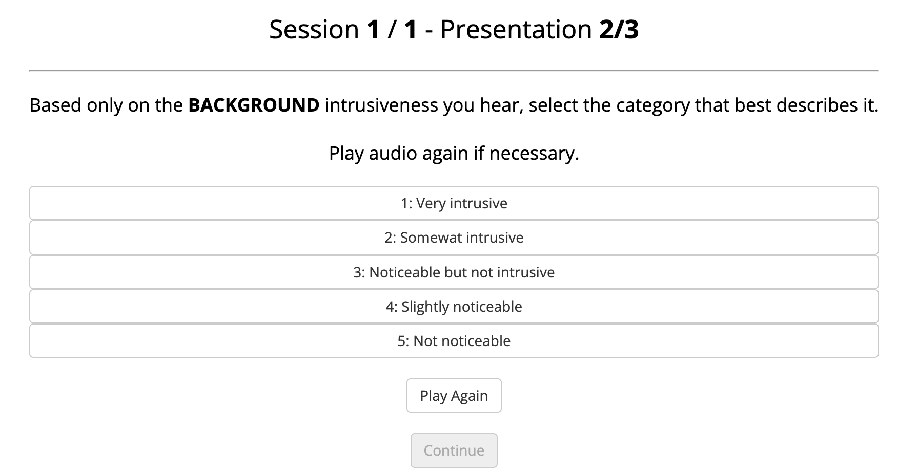
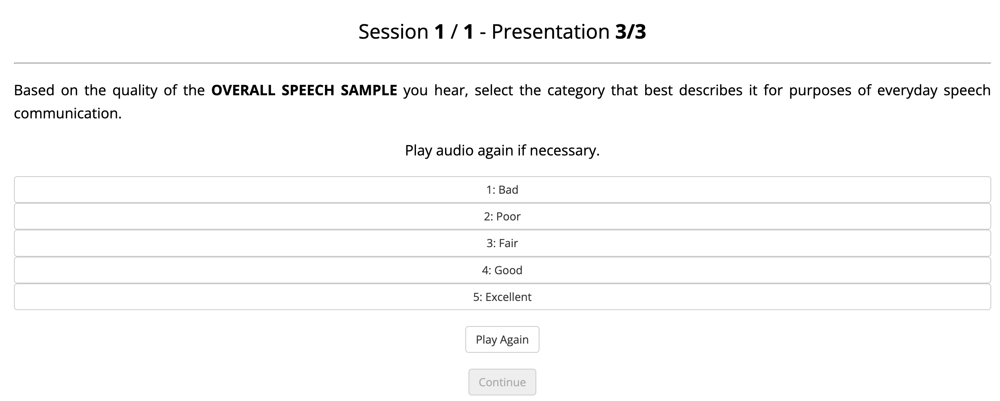
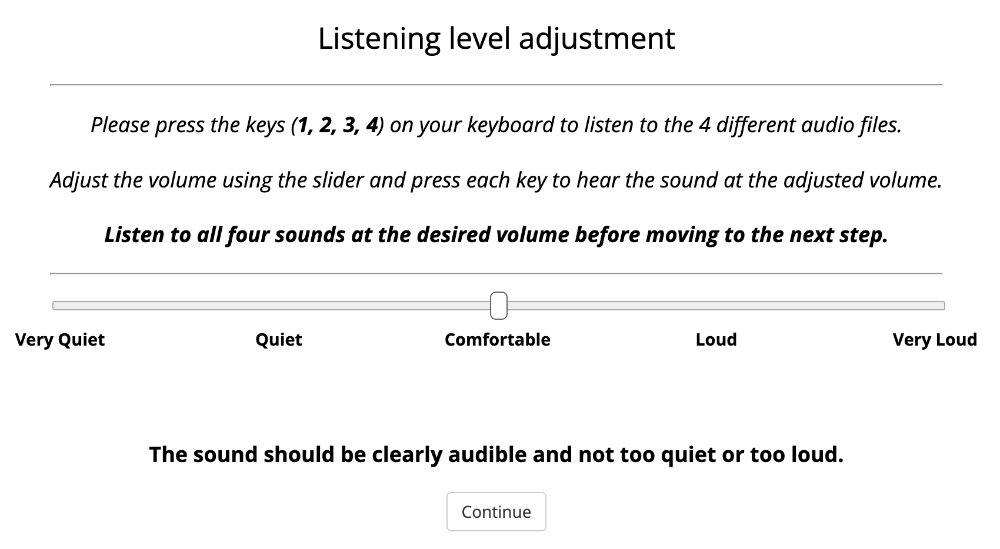

<!DOCTYPE html>
<html>
<head>
  <title>Phase enhancement subjective listening tests</title>

  <!-- Load libraries -->
  <script src="../lib/jspsych-7.3.0/dist/jspsych.js"></script>

  <!-- Load jsPsych plug-ins -->
  <script src="../lib/jspsych-7.3.0/dist/plugin-html-button-response.js" type="text/javascript"></script>
  <script src="../lib/jspsych-7.3.0/dist/plugin-html-keyboard-response.js" type="text/javascript"></script>
  <script src="../lib/jspsych-7.3.0/dist/plugin-html-slider-response.js" type="text/javascript"></script>
  <script src="../lib/jspsych-7.3.0/dist/plugin-video-button-response.js" type="text/javascript"></script>
  <script src="../lib/jspsych-7.3.0/dist/plugin-audio-button-response.js" type="text/javascript"></script>
  <script src="../lib/jspsych-7.3.0/dist/plugin-audio-slider-response.js" type="text/javascript"></script>
  <script src="../lib/jspsych-7.3.0/dist/plugin-audio-keyboard-response.js" type="text/javascript"></script>
  <script src="../lib/jspsych-7.3.0/dist/plugin-audio-keyboard-response2.js" type="text/javascript"></script>
  <script src="../lib/jspsych-7.3.0/dist/plugin-survey-text.js" type="text/javascript"></script>
  <script src="../lib/jspsych-7.3.0/dist/plugin-instructions.js" type="text/javascript"></script>
  <script src="../lib/jspsych-7.3.0/dist/plugin-preload.js" type="text/javascript"></script>
  <script src="../lib/jspsych-7.3.0/dist/plugin-fullscreen.js" type="text/javascript"></script>
  <script src="../lib/jspsych-7.3.0/dist/plugin-survey-html-form.js" type="text/javascript"></script>
  <script src="../lib/jspsych-7.3.0/dist/plugin-survey-multi-choice.js" type="text/javascript"></script>
  <script src="../lib/jspsych-7.3.0/dist/plugin-survey-text.js" type="text/javascript"></script>
  <script src="../lib/jspsych-7.3.0/dist/plugin-call-function.js" type="text/javascript"></script>

  <!-- Load experiment configuration file -->
  <script src="js/config.js" type="text/javascript"></script> 
  <!--<script src="js/subjective_listening_experiment_1.js" type="text/javascript"></script> -->
  <script src="js/debug_experiment.js" type="text/javascript"></script> 
  <script src="js/submit.js" type="text/javascript"></script> 

  <!-- Load CSS styles -->
  <link href="../lib/jspsych-7.3.0/dist/jspsych.css" rel="stylesheet" type="text/css"></link>
  
</head>
<body></body>
<script>

/*

Code of CHiME UDASE listening task experiment.

2023/04/18

AUTHOR: Matthieu Fraticelli / fraticelli.matthieu@hotmail.fr

Modified by Georgiana-Elena Sfeclis 
University of East Anglia
18/12/2024
31/01/2025


*/

//-------------------------------------------------------------------------------------------------------------

console.log(all_trials.length)


// Initialize jsPsych
var jsPsych = initJsPsych({
      on_finish: function() {
      //jsPsych.data.displayData(); 
        //jsPsych.data.get().localSave('csv',`${uniqueID}_data.csv`);
        var data = jsPsych.data.get().json();
        submit(data, 'random');
       },
      on_trial_start: function() {
       },
      on_trial_finish: function(){

       },
    }); 
  
  
// Initialize timeline.
var timeline = [];


//PARAM -------------------------------------------------------------------------------------------------------------

// var audio_test = new Audio('audio/pinknoise.wav');
// console.log(audio_test.duration)

// async function getLength() {
//   return new Promise((resolve) => {
//     audio_test.addEventListener('loadedmetadata', function() {
//       resolve(audio_test.duration);
//     });
//   });
// }

// var length ;

// var getLengthAudio = {
//   type: jsPsychCallFunction,
//   async: true,
//   func: (done) => {
//     length = getLength()
//     console.log(length)
//     done(length)
//   }

// };


function getSessionLength(all_trials) {
  var sessionLengths = {};

  for (var i = 0; i < all_trials.length; i++) {
    var trial = all_trials[i];
    var session = trial.session.toString(); 

    if (session in sessionLengths) {
      sessionLengths[session]++;
    } else {
      sessionLengths[session] = 1;
    }
  }

  return sessionLengths;
}

var sessions = getSessionLength(all_trials)
console.log(sessions)


var uniqueID; 
var prolificID;
var soundListened = false;
var audio;
var q = 0; 
var i = 0;
var k = 0;
var TEST = 10;
var soundPlayed; 
var labels;
var prompt; 
var preprompt; 
var responseScale;

var keyPress1;
var rtKey1;
var rtArray1 = [];
    
var keyPress2;
var rtKey2;
var rtArray2 = [];
    
var keyPress3;
var rtKey3;
var rtArray3 = [];
    
var keyPress4;
var rtKey4;
var rtArray4 = [];

  
//CODE BELOW -------------------------------------------------------------------------------------------------------------

// var welcome = {
      
//       type: jsPsychHtmlButtonResponse,
//       stimulus: `

//        <p></p>

      
//        <p style="font-size:25px;border: 0px solid #000;border-radius: 5px; color:#222;padding: 8px; font-family: sans-serif">Welcome</p><hr>
//        <p>Thank you for participing in this subjective listening test.</p>
//        <p style="font-size:18px">To begin, click on <b>Continue</b>.</p>
//   `,
//       choices: ['Continue'],
//       on_start: function(){
//         var IDLetter = ['A','B', 'C', 'D', 'E', 'F', 'G', 'H', 'I', 'J', 'K', 'L', 'M', 'N', 'O', 'P', 'Q', 'R', 'S', 'T', 'U', 'V', 'W', 'Y', 'Y', 'Z']
//         var IDLetterChoose = jsPsych.randomization.shuffle(IDLetter).slice(0, 3).join('')
//         var randomNumberID = `${Math.floor((Math.random()*1000))}`
//         uniqueID = `${Math.floor((Math.random()*100))}`+`-${IDLetterChoose}`+`-${Math.floor(Date.now()-1000000000000)}`; 
//         console.log(uniqueID)
//         jsPsych.data.addProperties({subject: uniqueID});
//         console.log(Date(Date.now()).toLocaleString().split(',')[0])
//         return uniqueID
//       },
//     };
    

var welcome = {
    type: jsPsychHtmlButtonResponse,
    stimulus: `
        <p></p>

        <p style="font-size:25px; border: 0px solid #000; border-radius: 5px; color:#222; padding: 8px; font-family: sans-serif">
        Welcome</p><hr>

        <p>Thank you for participating in this subjective listening test.</p>
        <p style="font-size:18px">To begin, click on <b>Continue</b>.</p>

        <p style="font-size:11px; color: #555; position: absolute; bottom: 10px; right: 10px; max-width: 450px;">
        This survey is adapted from the jsPsych implementation of ITU-T P.835 listening test, originally created by 
        Matthieu Fraticelli at Sheffield University, available at 
        <a href="https://github.com/UDASE-CHiME2023/jsPsych-P.835-listening-test/tree/main" target="_blank">
        GitHub Repository</a>. This modified version complies with the MIT License.
        </p>
    `,
    choices: ['Continue'],
    on_start: function(){
        var IDLetter = ['A','B', 'C', 'D', 'E', 'F', 'G', 'H', 'I', 'J', 'K', 'L', 'M', 'N', 'O', 'P', 'Q', 'R', 'S', 'T', 'U', 'V', 'W', 'Y', 'Y', 'Z'];
        var IDLetterChoose = jsPsych.randomization.shuffle(IDLetter).slice(0, 3).join('');
        var randomNumberID = `${Math.floor((Math.random() * 1000))}`;
        uniqueID = `${Math.floor((Math.random() * 100))}-${IDLetterChoose}-${Math.floor(Date.now() - 1000000000000)}`; 
        console.log(uniqueID);
        jsPsych.data.addProperties({subject: uniqueID});
        console.log(Date(Date.now()).toLocaleString().split(',')[0]);
        return uniqueID;
    }
};


timeline.push(welcome);


// const consentPage = {
//     type: jsPsychHtmlButtonResponse,
//     stimulus: `
//         <h2>Participant Information & Consent</h2>
//         <p>Before you begin, please read the following information carefully.</p>
//         <p>This study involves evaluating audio samples and providing subjective ratings. Participation is voluntary, 
//           and you may withdraw at any time without penalty. No personal data will be collected, and all responses will remain anonymous.</p>
//           This research was approved by the SCI S-REC (Faculty of Science Research Ethics Subcommittee), application reference ETH2425-1478.
//         <p>If you agree to participate, please check the box below and click "Continue" to proceed.</p>
//         <label>
//             <input type="checkbox" id="consent-checkbox"> I have read and understood the information and consent to participate in this study.
//         </label>
//     `,
//     choices: ["Continue"],
//     button_html: `<button id="consent-button" class="jspsych-btn" disabled>Continue</button>`,
//     on_load: function () {
//         // Enable the button only when the checkbox is checked
//         document.getElementById("consent-checkbox").addEventListener("change", function () {
//             document.getElementById("consent-button").disabled = !this.checked;
//         });
//     }
// };
// timeline.push(consentPage);


const consentPage = {
  type: jsPsychHtmlButtonResponse,
  stimulus: `
    <h2>Participant Information & Consent</h2>

    <p>This study involves evaluating audio samples and providing subjective ratings. Participation is voluntary, 
      and you may withdraw at any time. No personal data will be collected, and all responses will remain anonymous.</p>
      
    <p>Please download the Participant Information page for more details:</p>
    <a href="data/ETH2425_1478_Participant_Information_Sheet.pdf" download id="download-link">
        <button class="jspsych-btn">Download Participant Information PDF</button>
    </a>

    <p>If you agree to participate, please check the box below and click "Continue" to proceed.</p>
    <label>
        <input type="checkbox" id="consent-checkbox"> I have read and understood the information and consent to participate in this study.
    </label>

    <p style="font-size:13px; color: #555; position: absolute; bottom: 10px;">
      This research was approved by the SCI S-REC (Faculty of Science Research Ethics Subcommittee, University of East Anglia), application reference ETH2425-1478.
        </p>
  `,
  choices: ["Continue"],
  button_html: `<button id="consent-button" class="jspsych-btn" disabled>Continue</button>`,
  on_load: function () {
    // Enable the button only when the checkbox is checked
    document.getElementById("consent-checkbox").addEventListener("change", function () {
      document.getElementById("consent-button").disabled = !this.checked;
    });
  }
};

timeline.push(consentPage);


var prolificIDTrial = {
  type: jsPsychHtmlButtonResponse,
  stimulus: `
    <h2>Please enter your Prolific ID</h2>
    <p>To proceed, please enter your <strong> Prolific ID </strong> in the box below:</p>
    <p> Make sure the Prolific ID is correctly copied from your Prolific account to ensure you will receive your payment. <p>
    <textarea id="prolific-id-textbox" rows="1" cols="50"></textarea>

    <!-- Instruction after input box -->
    <p style="font-size: 16px; color: #555;">Please click Continue to submit your ID.</p>

    <!-- Continue Button -->
    <div id="continue-button-container" style="margin-top: 20px;">
      <button id="continue-button" class="jspsych-btn" disabled>Continue</button>
    </div>
  `,
  choices: [],
  on_load: function() {
    const continueButton = document.getElementById('continue-button');
    const inputField = document.getElementById('prolific-id-textbox');

    continueButton.disabled = true;

    inputField.addEventListener('input', function() {
      console.log("Input detected:", inputField.value); // Log every input
      continueButton.disabled = inputField.value.trim() === "";
    });

    inputField.addEventListener('keydown', function(event) {
      if (event.key === "Enter") {
        event.preventDefault(); // Prevent form submission or reset
        console.log("Enter key pressed, but form won't submit.");
      }
    });

    continueButton.addEventListener('click', function() {
      const inputValue = inputField.value.trim();

      if (inputValue !== '') {
        const cleanedInput = inputValue.replace(/\s/g, ''); 
        uniqueID += "_";
        uniqueID += cleanedInput;  

        console.log("Entered Prolific ID (cleaned):", cleanedInput);
        console.log("Updated uniqueID:", uniqueID);
      } else {
        console.log("Prolific ID input is empty.");
      }

      jsPsych.finishTrial();
      console.log("Trial finished and moved to the next trial.");
    });
  }
};


  timeline.push(prolificIDTrial);    

//To switch in fullscreen
// var enter_fullscreen = {
//       type: jsPsychFullscreen,
//       message: "<p><i>You're about to enter fullscreen mode.</i></p>",
//       button_label: "Continue",
//       fullscreen_mode: true
//       }; 

// timeline.push(enter_fullscreen)


var instructions0 = {
  type: jsPsychHtmlButtonResponse,
  stimulus: `<p><b>Audio Subjective Listening Tests</b></p><hr>
     <p>In this experiment, you will be asked to listen to a number of audio samples. Be sure you follow these steps before starting the experiment:</p>
     <ul style="text-align: left;">
       <li>Make sure you are in a quiet environment with minimal distractions.</li>
       <li>For optimal sound quality, we recommend using headphones or earphones. (<strong>Please use if available!)</strong></li>
       <li>Set the volume to a comfortable level where you can hear the audio clearly, but without discomfort. </li>
     </ul>
     <p>Click <b>Continue</b> when you are ready to begin.</p>`,
  choices: ['Continue'],
};

var trial1 = {
  type: jsPsychHtmlButtonResponse,
  stimulus: function() {
    return `
    <p><b>Sound Check</b></p><hr>
    <p>This is an audio test to verify that the audio plays correctly on your computer.</p>
    Click 'Play Audio' as many times as necessary to ensure the sample is audible. Once you are satisfied, click 'Continue' to proceed.
    <p>
      <button id="replay-audio" class="jspsych-btn">Play Audio</button>
      <p>
      <button id="continue-button" class="jspsych-btn" disabled>Continue</button>
    `;
  },
  choices: [],  
  response_ends_trial: true,
  trial_ends_after_audio: false,
  ignore_responses_during_audio: false,
  on_load: function() {
    // Initialize the audio element
    var audioElement = new Audio("data/3536-23268-0010_3081-166546-0020_01_8000Hz.wav");

    document.getElementById("replay-audio").addEventListener("click", function() {
      audioElement.currentTime = 0; 
      audioElement.play();

      document.getElementById("continue-button").disabled = false;
    });

    document.getElementById("continue-button").addEventListener("click", function() {
      jsPsych.finishTrial(); 
    });
  },
  on_finish: function(data) {
    console.log("Trial finished!");
  }
};

var instructions = {
  type: jsPsychHtmlButtonResponse,
  stimulus: `<p><b>Instructions</b></p><hr><p style="text-align: justify; text-justify: inter-word;">${CONSIGNE1}</p>`,
  choices: ['Continue'],
}; 

// Each session will include three presentations of a short 
//   sound sample (between 3 and 5 seconds). In each presentation, you will rate the same audio sample on a different scale. 
//   In each session, you will listen to the same speech sample three times, each time rated on a different scale. 
//   <p> In subsequent sessions, you may hear the same speech again, but it will be processed with a different enhancement method, 
//   so it will not be the exact same version as before.

// var instructions1 = {
//   type: jsPsychHtmlButtonResponse,
//   stimulus: `<p><b>Task description</b></p><hr>
//   <p> In this experiment, you will be rating the quality of various sound samples containing speech 
//   processed by an enhancement algorithm. <p>
//     The experiment is organised into sessions, with each session containing three presentations of the same audio sample (lasting 3-5 seconds)
//      to be rated on three different scales (one scale for each presentation). You may encounter practice sessions which are there to familiarise
//       yourself with the task before you begin actual test sessions). <p>
//     In subsequent sessions, you may hear the same speech again, but it will be processed with a different enhancement method, 
//   so it will not be identical to any previous session.
// `,
//   choices: ['Continue'],
// }; 

var instructions1 = {
  type: jsPsychHtmlButtonResponse,
  stimulus: `
    <p class="task-description">Task Description</p>
    <hr>
    <p>In this experiment, you will rate the quality of various audio samples containing speech processed by an enhancement algorithm. 
      The experiment consists of multiple sessions. Each session includes three presentations of the same audio sample (lasting 3-5 seconds), 
      which you will rate on three different scales (SIG-BAK-OVRL).</p>

    <p>You may encounter practice sessions to familiarize yourself with the task. In subsequent sessions, 
      the same speech may be presented again, but processed with a different enhancement method.</p>

    <p>Every two sessions, you will be asked if you are still focused on the task. Use this time to take a break if necessary, 
      and resume once you feel ready.</p>

    <p><strong>Important: Please do not close the browser until you reach the very end of and click "End the experiment," 
      as closing it prematurely will terminate the experiment and your results will not be saved.</strong></p>

    <p>The structure of the experiment is shown below:</p>
    `,
  choices: ['Continue'],
}; 


var instructions2 = {
  type: jsPsychHtmlButtonResponse,
  stimulus: `<p><b>Task description - SPEECH SIGNAL EVALUATION</b></p><hr> <p>
  In the FIRST presentation, you will be asked to listen to an audio file and evaluate ONLY the SPEECH SIGNAL QUALITY.
  Please follow these steps:
  <ol style="text-align: left;">
    <li>Focus only on the speech signal during the presentation.</li>
    <li>Click the "Play again" button if you need to listen to the audio again .</li>
    <li>Rate how distorted the <strong>speech signal</strong> sounds to you.</li>
  </ol>
  You will use the rating scale shown below to record your opinion of the speech signal. 
  Please select the phrase from the list that best describes your perception. 
  The higher the number you choose, the better you think the speech signal sounds.
  <p><strong> EXAMPLE EVALUATION PAGE </strong></p>
  <p>
  
  </p>`,
  choices: ['Continue'],
}; 


var instructions3 = {
  type: jsPsychHtmlButtonResponse,
  stimulus: `<p><b>Task description - BACKGROUND EVALUATION</b></p><hr> <p>
  In the SECOND presentation, you will be asked to listen to an audio file and evaluate ONLY the BACKGROUND.
  Please follow these steps:
  <ol style="text-align: left;">
    <li>Focus only on the background during the presentation.</li>
    <li>Click the "Play again" button if you need to listen to the audio again .</li>
    <li>Rate how noticeable or intrusive the <strong>backgrounf</strong> sounds to you.</li>
  </ol>
  You will use the rating scale shown below to record your opinion of the background alone. 
  Please select the phrase from the list that best describes your perception. 
  The higher the number you choose, the better you think the speech signal sounds.
  <p><strong> EXAMPLE EVALUATION PAGE </strong></p>
  <p>
  
  </p>`,
  choices: ['Continue'],
}; 


var instructions4 = {
  type: jsPsychHtmlButtonResponse,
  stimulus: `<p><b>Task description - OVERALL SIGNAL EVALUATION</b></p><hr> <p>
  In the THIRD presentation, you will be asked to listen to an audio file and evaluate the OVERALL SIGNAL QUALITY. 
  Please follow these steps:
  <ol style="text-align: left;">
    <li>Focus on the entire audio sample (both the speech signal and background) during the presentation.</li>
    <li>Click the "Play again" button if you need to listen to the audio again .</li>
    <li>Rate the <strong>overall</strong> quality of the speech sample for everyday speech communication.</li>
  </ol>
  You will use the rating scale shown below to record your opinion of the overall speech signal. 
  Please select the phrase from the list that best describes your perception. 
  The higher the number you choose, the better you think the speech signal sounds.
  <p><strong> EXAMPLE EVALUATION PAGE </strong></p>
  <p>
  
  </p>`,
  choices: ['Continue'],
}; 


// var instructions5 = {
//   type: jsPsychHtmlButtonResponse,
//   stimulus: `<p><b>Organization of the Listening Experiment</b></p><hr>
//      <p>The structure of the listening experiment is shown in the figure below.</p>
//      <p>The experiment consists of several listening sessions. Each session consists of three presentations of the same sound sample. 
//       For each presentation, you will be asked to provide a rating.</p>
//      <p>The order of the rating scales (SIG-BAK-OVRL) is specified for each session.</p>
//      Every 2 sessions you will be asked if you are still concentarted on the task. Use these moment to take a break if necessary, 
//      and resume the task once you feel focused enough.
//      <p> <strong>Do not close the browser as this will lead to early termination and failure of the experiment.</strong>
     
//      <p>
//     
//     </p>`,
//   choices: ['Continue'],
// }; 


// var instructions6 = {
//   type: jsPsychHtmlButtonResponse,
//   stimulus: `<p><b>Volume Adjustment </b></p><hr>
//      <p>The listening system has been set to a default listening level. Before starting the experiment, 
//       you will have the opportunity to listen to a few sound samples to ensure the volume is comfortable for you (see figure below).</p>
//      <p>If the sound is too loud or too quiet, you can adjust the volume using a slider to find a level that feels comfortable.</p>
     
//      <p>
//     
//     </p>`,
//   choices: ['Continue'],
// }; 


var instructions7 = {
  type: jsPsychHtmlButtonResponse,
  stimulus: `<p><b>Additional Recommendations</b></p><hr>
     <p>The test sessions will require your full attention throughout to ensure each the sound sample in each presentation is rated appropriately.</p>
     <ul style="text-align: left;">
       <li>You will hear each sound sample at the beginning of the presentation in each session.
         You may replay the audio on the rating page before moving on to another presentation.</li>
       <li>The instructions will remain the same throughout the experiment. After a few trials, you will become more familiar with the task, 
        allowing you to quickly identify whether you need to focus on the SPEECH SIGNAL, BACKGROUND, or OVERALL quality in the instructions.</li>
       <li>Do not overthink your ratings when evaluating the sound samples.</li>
       <li>This experiment is about judging the quality of the sound samples on various scales, not about speech intelligibility. 
        Some speakers may have different manner of speech which may affect your understanding of the sentence. Other speech samples may end abruptly. This should <strong>not</strong>
           influence your judgment of the sound quality or background intrusiveness.</li>
       <li>Do not close your browser during the experiment, as doing so will result in data loss.</li>
     </ul>
     <p>Thank you for participating in this experiment!</p>`,
  choices: ['Continue'],
}; 


// INSTRUCTIONS SET PUSH TO TIMELINE
timeline.push(instructions0);
timeline.push(trial1);
// timeline.push(instructions);
timeline.push(instructions1); 
timeline.push(instructions2); 
timeline.push(instructions3); 
timeline.push(instructions4); 
// timeline.push(instructions5);
// timeline.push(instructions6);
timeline.push(instructions7);


// var loudnessTest1 = {
//     type: jsPsychHtmlButtonResponse,
//     stimulus: `<p style="font-size:25px; color:black;">Listening level adjustment</p><hr>
//                <p><i>Select the appropriate volume for your sound system.</i></p>
//                <p>Please click on <strong>continue</strong></p><p></p>`,
//     choices: ['Continue']
// };   
// timeline.push(loudnessTest1);
    

// var audio = new Audio('data/backups/female/1673-143396-0012_8297-275155-0022_01/1673-143396-0012_8297-275155-0022_01_8kHz.wav');
// var resultSlider;

// function dBtoLin(x) {
//   x = 0.5 * Math.exp(Math.log(10) / 20 * x);
//   return x 
// }

// var loudnessTest2 = {
//   type: jsPsychHtmlSliderResponse,
//   stimulus: `<p style="font-size:25px; color:black;">Listening level adjustment</p><hr>
//              <p><i>Please press the keys (<strong>1, 2, 3, 4</strong>) on your keyboard to listen to the 4 different audio files.</i></p>
//              <p><i>Adjust the volume using the slider and press each key to hear the sound at the adjusted volume.</i></p>
//              <p><i><strong>Listen to all four sounds at the desired volume before moving to the next step.<strong></i></p><hr>`,
//   button_label: ['Continue'],
//   prompt: `
//     <p>The sound should be clearly audible and not too <strong>quiet</strong> or too <strong>loud</strong>.</p>
//   `,
//   labels: ["Very Quiet", "Quiet", "Comfortable", "Loud", "Very Loud"], 
//   require_movement: false,
//   min: -5,
//   max: 5, 
//   slider_start: 0, 
//   step: 0.2,
// //   on_load: function() {
// //     // Disable the 'Continue' button initially
// //     document.querySelector('.jspsych-btn').disabled = true;

// //     // Initialize a set to track which keys have been pressed
// //     window.keysPressed = new Set();

// //     // Add an event listener to track key presses
// //     document.addEventListener('keydown', function(event) {
// //         // Check if the key pressed is one of the allowed keys
// //         if (['1', '2', '3', '4'].includes(event.key)) {
// //         window.keysPressed.add(event.key); // Add the key to the set
// //         }

// //         // Enable the 'Continue' button only if all 4 keys have been pressed
// //         if (window.keysPressed.has('1') && window.keysPressed.has('2') && window.keysPressed.has('3') && window.keysPressed.has('4')) {
// //         document.querySelector('.jspsych-btn').disabled = false;  // Enable 'Continue' button
// //         }
// //     });
// //   },
//   on_start: function(){

//         keyPress1 = null
//         rtKey1 = null

//         var press1 = function(info){
//         audio.pause()
//         console.log("Touch 1 pressed at " + info.rt +  " ms")
//         keyPress1 = true
//         rtArray1.push(info.rt)
//         rtKey1 = info.rt
//         audio = new Audio("data/backups/female/1673-143396-0012_8297-275155-0022_01/1673-143396-0012_8297-275155-0022_01_8kHz.wav");
//         slider_value = jsPsych.getDisplayElement().querySelector("#jspsych-html-slider-response-response").valueAsNumber
//         audio.loop = false;
//         console.log(dBtoLin(slider_value))
//         audio.volume = dBtoLin(slider_value);
//         audio.play()
//         }
        
//         keyPress2 = null
//         rtKey2 = null

//         var press2 = function(info){
//         audio.pause()
//         console.log("Touch 2 pressed at " + info.rt +  " ms")
//         keyPress2 = true
//         rtArray2.push(info.rt)
//         rtKey2 = info.rt
//         audio = new Audio("data/backups/female/2412-153954-0016_174-50561-0007_01/2412-153954-0016_174-50561-0007_01_8kHz.wav");
//         slider_value = jsPsych.getDisplayElement().querySelector("#jspsych-html-slider-response-response").valueAsNumber
//         audio.loop = false;
//         console.log(dBtoLin(slider_value))
//         audio.volume = dBtoLin(slider_value);
//         audio.play()
//         audio.play().catch(e => console.error("Error playing audio 1:", e));
//         }
        
//         keyPress3 = null
//         rtKey3 = null

//         var press3 = function(info){
//         audio.pause()
//         console.log("Touch 3 pressed at " + info.rt +  " ms")
//         keyPress3 = true
//         rtArray3.push(info.rt)
//         rtKey3 = info.rt
//         audio = new Audio("data/backups/male/174-84280-0006_3536-23268-0011_01/174-84280-0006_3536-23268-0011_01_8kHz.wav");
//         slider_value = jsPsych.getDisplayElement().querySelector("#jspsych-html-slider-response-response").valueAsNumber
//         audio.loop = false;
//         console.log(dBtoLin(slider_value))
//         audio.volume = dBtoLin(slider_value);
//         audio.play()
//         }
        
//         keyPress4 = null
//         rtKey4 = null

//         var press4 = function(info){
//         audio.pause()
//         console.log("Touch 4 pressed at " + info.rt +  " ms")
//         keyPress4 = true
//         rtArray4.push(info.rt)
//         rtKey4 = info.rt
//         audio = new Audio("data/backups/male/251-136532-0021_5694-64029-0030_01/251-136532-0021_5694-64029-0030_01_8kHz.wav");
//         slider_value = jsPsych.getDisplayElement().querySelector("#jspsych-html-slider-response-response").valueAsNumber
//         audio.loop = false;
//         console.log(dBtoLin(slider_value))
//         audio.volume = dBtoLin(slider_value);
//         audio.play()
//         }
        

//         var keyboard1 = jsPsych.pluginAPI.getKeyboardResponse({
//           callback_function: press1,
//           valid_responses: ['1','&', 'a'],
//           rt_method: 'performance',
//           persist: true,
//           allow_held_key: true,
//         })
        
//         var keyboard2 = jsPsych.pluginAPI.getKeyboardResponse({
//           callback_function: press2,
//           valid_responses: ['2','é', 's'],
//           rt_method: 'performance',
//           persist: true,
//           allow_held_key: true,
//         })
        
//         var keyboard3 = jsPsych.pluginAPI.getKeyboardResponse({
//           callback_function: press3,
//           valid_responses: ['3','"', "d"],
//           rt_method: 'performance',
//           persist: true,
//           allow_held_key: true,
//         })
        
//         var keyboard4 = jsPsych.pluginAPI.getKeyboardResponse({
//           callback_function: press4,
//           valid_responses: ['4',"'", "f"],
//           rt_method: 'performance',
//           persist: true,
//           allow_held_key: true,
//         })
//   },  
//   on_finish: function(data){
//     audio.pause()

//     resultSlider = jsPsych.data.getLastTrialData().trials[0].response
//     resultSlider = dBtoLin(resultSlider)
//     console.log(resultSlider)
//     return resultSlider
//   },
// };

// timeline.push(loudnessTest2);


var startTest = {
  type: jsPsychHtmlButtonResponse,
  stimulus: `<p style="font-size: 25px"><b>Start of the experiment</b></p><hr>
  <p> Please be aware that certain audio samples might stop suddenly. 
    Do <strong> not </strong> factor that abrupt ending into your evaluation.`,
  choices: ['Continue'],
  on_start: function(){
  },
  on_finish: function(){
  },
};

timeline.push(startTest);


//EXPERIMENTAL PROCEDURE -------------------------------------------------------------------------------------------------------------

    
var z = 1;
var p = 1;  
var t = 1;


// var launchSound = {
//   type: jsPsychHtmlButtonResponse,
//   stimulus:function(){
//     var currentSession = all_trials[q].session + 1;
//     var totalSessions = new Set(all_trials.map(trial => trial.session)).size;
//     return `
//     <p style="font-size: 25px">
//         Session <b>${currentSession}</b> / <b>${totalSessions}</b> - 
//         Presentation <b>${t}/3</b>
//       </p><hr>
//       <p style="text-align: justify; text-justify: inter-word;">${preprompt}</p>
//             <p>When you are ready, click on <b>Play sound</b></p>
//             `
//   },
//   choices: ["Play sound"],
// }

var launchSound = {
  type: jsPsychHtmlButtonResponse,
  stimulus: function() {
    var currentTrial = all_trials[q];
    var currentSession = currentTrial.session + 1;

    // Filter trials for the correct subset (either 0 for practice or 1 for test)
    var subsetSessions = all_trials.filter(trial => trial.subset === currentTrial.subset);
    
    // Calculate total sessions for the specific subset (0 or 1)
    var totalSessions = subsetSessions.length / 3;

    // Debugging: check what is being filtered (to help identify if something is wrong)
    console.log("Current trial subset: ", currentTrial.subset);
    console.log("Filtered subset sessions: ", subsetSessions);

    return `
      <p style="font-size: 25px">
        Session <b>${currentSession}</b> / <b>${totalSessions}</b> - 
        Presentation <b>${t}/3</b>
      </p><hr>
      <p style="text-align: justify; text-justify: inter-word;">${preprompt}</p>
      <p>When you are ready, click on <b>Play sound</b></p>
    `;
  },
  choices: ["Play sound"],
};


var extractInf = {
  type: jsPsychCallFunction,
  func: function(){
    console.log(`COND IS ${all_trials[q].scale}`)
    if(all_trials[q].scale == "SIG"){
      labels = LABELS1
      prompt = PROMPT1
      preprompt = PREPROMPT1
    } else if(all_trials[q].scale == "BAK"){
      labels = LABELS2
      prompt = PROMPT2
      preprompt = PREPROMPT2
    } else if(all_trials[q].scale == "OVRL"){
      labels = LABELS3
      prompt = PROMPT3
      preprompt = PREPROMPT3
    }
  },
}; 


var audioPlay = {
  type: jsPsychHtmlKeyboardResponse, 
  stimulus: `<p style= "font-size: 60px">+<p>`,
  choices: "NO_KEYS",
  trial_duration: 5000, 
  on_start: function(){
          console.log(q)
          soundPlayed = all_trials[q].file
          audio = new Audio(soundPlayed);
          console.log(`SOUND: ${soundPlayed}`)
          audio.loop = false;
        //   console.log(document.getElementById(soundPlayed).duration)
          // console.log(resultSlider)
          // audio.volume = resultSlider;
          audio.play()
         
          return soundPlayed
  },
  on_finish: function(){
          audio.pause()
  },
}


var task = {
  type: jsPsychHtmlButtonResponse,
  stimulus: function() {
    var currentTrial = all_trials[q];
    var currentSession = currentTrial.session + 1;

    // Filter trials for the correct subset (either 0 for practice or 1 for test)
    var subsetSessions = all_trials.filter(trial => trial.subset === currentTrial.subset);
    
    // Calculate total sessions for the specific subset (0 or 1)
    var totalSessions = subsetSessions.length / 3;

    // Debugging: check what is being filtered (to help identify if something is wrong)
    console.log("Current trial subset: ", currentTrial.subset);
    console.log("Filtered subset sessions: ", subsetSessions);

    return `
      <p style="font-size: 25px">
        Session <b>${currentSession}</b> / <b>${totalSessions}</b> - 
          Presentation <b>${t}/3</b>
        </p><hr>
        <p style="text-align: justify; text-justify: inter-word;">${prompt}</p>

        <!-- Choices for responses -->
        <div id="choices" style="display: flex; flex-direction: column;">
          ${labels.map(label => `<button class="jspsych-btn" id="choice-${label}">${label}</button>`).join('')}
        </div>

        <!-- Play Again Button -->
        <div id="play-again-button-container" style="margin-top: 20px;">
          <button id="play-again-button" class="jspsych-btn">Play Again</button>
        </div>

        <!-- Continue Button -->
        <div id="continue-button-container" style="margin-top: 20px;">
          <button id="continue-button" class="jspsych-btn" disabled>Continue</button>
        </div>
    `;
  },
  choices: [], 
  on_load: function() {
    var continueButton = document.getElementById('continue-button');
    var playAgainButton = document.getElementById('play-again-button');
    var choiceButtons = document.querySelectorAll('#choices .jspsych-btn');

    console.log(q);
    soundPlayed = all_trials[q].file;
    var audioElement = new Audio(soundPlayed); 
    // audioElement.volume = resultSlider;
    audioElement.pause(); 

    
    continueButton.disabled = true;

 
    choiceButtons.forEach(function(button) {
      button.addEventListener('click', function(event) {
        
        continueButton.disabled = false;

        
        choiceButtons.forEach(function(btn) {
          btn.style.backgroundColor = ''; 
        });
        event.target.style.backgroundColor = 'lightblue';  

        console.log('Highlighted button value:', event.target.id.split('-')[1]);
        console.log('Response value: ', event.target.id.split(':')[0].split("-")[1]);

        jsPsych.data.addDataToLastTrial({
          response: event.target.id.split('-')[1], 
          responseScale: parseInt(event.target.id.split(':')[0].split('-')[1]) 
        });
      });
    });

    playAgainButton.addEventListener('click', function() {
      // Reset audio and play it from the beginning
      audioElement.pause();
      audioElement.currentTime = 0; 
      audioElement.play();
      console.log("Audio played again!");
    });

    continueButton.addEventListener('click', function() {
      
      if (!audioElement.paused) {
        audioElement.pause();
        audioElement.currentTime = 0; 
        console.log("Audio stopped before continuing.");
      }

      // Proceed to the next trial
      jsPsych.finishTrial();
    });
  },

  on_finish: function(data) {
    var audioElement = data.audioElement; 

    if (audioElement) {
      audioElement.pause();
      audioElement.currentTime = 0;
    }
  }
};


var dataSave = {
  type: jsPsychHtmlKeyboardResponse,
  stimulus: "",
  choices: ["NO_KEYS"],
  trial_duration: 10,
  
  data: function(){
    return {
        task: 'REPONSE SUBJET',
        id: uniqueID,
        date: Date(Date.now()).toLocaleString().split(',')[0],
        // vol: `${resultSlider}`,
        soundPlayed: `${soundPlayed}`,  //`${}`,
        cond:`${all_trials[q].scale}`,
        subset:`${all_trials[q].subset}`,
        session:`${all_trials[q].session}`,

        // savelast 
        responseScale: `${responseScale}`,
      }
  },
  on_finish: function(){
    console.log(`Z is ${z}`)
    if(z % 3 === 0){
      p = p+1
      t = t % 3
      console.log("new sound")
    } else {
      console.log("same sound")
    }
    console.log(`t is ${t}`)
    t = t+1
    z = z+1
  },
};

var pause = {
  type: jsPsychHtmlButtonResponse,
  stimulus: `<p style="font-size: 25px"><b>Break</b></p><hr>
              <p>Are you still concentrating on the task?</p>`,
  choices: ["Yes, continue"],
  on_start: () => { p = 1 },
};

var trialIndex;
var trialIndexNew;

var condPause = {
  timeline: [pause],
  conditional_function: function () {
    // Track how many sessions have been completed
    trialIndex = all_trials[q].session;

    // calculate the total number of sessions completed
    if (q + 1 < all_trials.length) {
      trialIndexNew = all_trials[q + 1].session;
    } else {
      trialIndexNew = all_trials[q].session;
    }

    console.log(`SESSION IS ${trialIndex}, NEW WILL BE ${trialIndexNew}`);

    // pause after every 2 sessions
    if (trialIndex === trialIndexNew) {
      console.log("Not break");
      return false;  // no break if it's the same session
    } else if ((trialIndex + 1) % 2 === 0) {  
      console.log("Break");
      return true;  
    } else {
      console.log("No break");
      return false; 
    }
  }
};


var practiceTrials = all_trials.filter(function(trial) {
  return trial.subset === 0;  
});


var testTrials = all_trials.filter(function(trial) {
  return trial.subset === 1; 
});

practiceTrials.sort((a, b) => a.session - b.session);  
testTrials.sort((a, b) => a.session - b.session);      

// Practice session loop task
var practiceLoopTask = {
  timeline: [
    extractInf,
    launchSound,
    audioPlay,
    task,
    dataSave,
    condPause
  ],
  loop_function: function() {
    if (i === practiceTrials.length - 1) {
      console.log("END PRACTICE LOOP");
      i = 0;  
      q++;
      return false;  
    } else {
      i++;  
      q++;  
      console.log(`PRACTICE LOOP ${i}, ${q}`);
      return true;
    }
  },
  trials: practiceTrials  
};

// Test session loop task
var testLoopTask = {
  timeline: [
    extractInf,
    launchSound,
    audioPlay,
    task,
    dataSave,
    condPause
  ],
  loop_function: function() {
    if (i === testTrials.length - 1) {
      console.log("END TEST LOOP");
      i = 0; 
      q++;
      return false;  
    } else {
      i++;  
      q++;  
      console.log(`TEST LOOP ${i}, ${q}`);
      return true;  
    }
  },
  trials: testTrials  
};

var practiceNotification = {
  type: jsPsychHtmlButtonResponse,
  stimulus: `<p><b>Practice Session</b></p><hr>
     <p>This is a practice session. Please focus on the task and complete the ratings as best as you can.</p>
     <p>There is no need to worry about making mistakes — this session is just 
      to help you get familiar with the task.</p>`,
  choices: ['Continue'],
}; 

var testNotification = {
  type: jsPsychHtmlButtonResponse,
  stimulus: `<p><b>Test Session</b></p><hr>
     <p>You are now entering the actual test sessions. Please pay attention and try to 
      complete the ratings as accurately as possible.</p>`,
  choices: ['Continue'],
}; 

// Final save task after completing all sessions
var finalSave = {
  type: jsPsychCallFunction,
  func: function () {
    console.log('Data saved at the end of the experiment');
  }
};

var globalProcedure = {
  timeline: [
    practiceNotification,  
    practiceLoopTask,      
    testNotification,      
    testLoopTask,         
    finalSave              
  ],
  loop_function: function() {

    console.log("Practice session finished. Now transitioning to test session.");
    i = 0;  
    q = 0;  
    return false;  
  }
};

timeline.push(globalProcedure);

// var endExp = {
//   type: jsPsychHtmlButtonResponse,
//   stimulus: `<p style="font-size:22px; color:black;">Thanks for your participation!</p><hr>`,
//   choices: ["End the experiment"]
// };
// timeline.push(endExp);

// // Run the experiment
// jsPsych.run(timeline);


// Final experiment ending page
var endExp = {
  type: jsPsychHtmlButtonResponse,
  stimulus: `<p style="font-size:22px; color:black;">Thank you for your participation!</p><hr>
  <p> Please click below to complete the survey and save results! <p>`,
  choices: ["End the experiment"]
};
timeline.push(endExp);

jsPsych.run(timeline);

</script>
</html>
